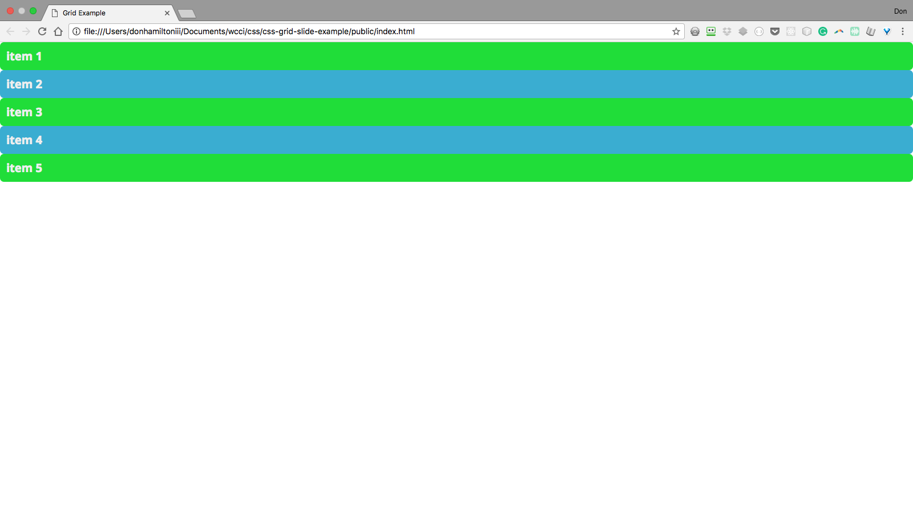
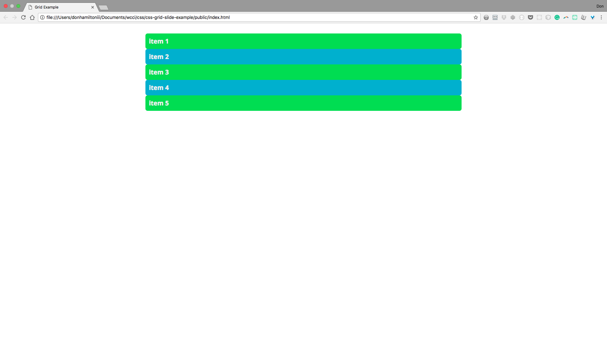
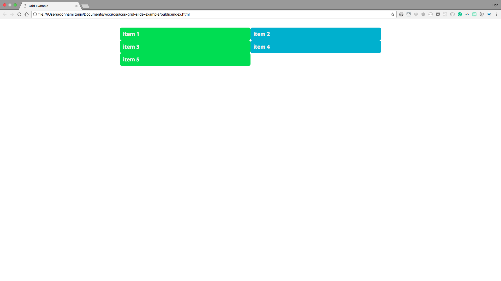
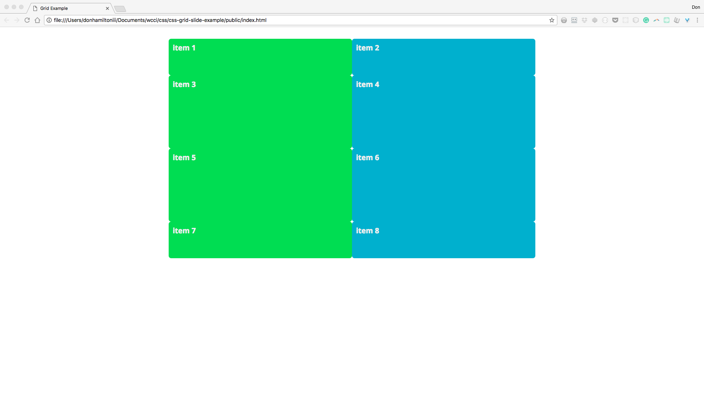
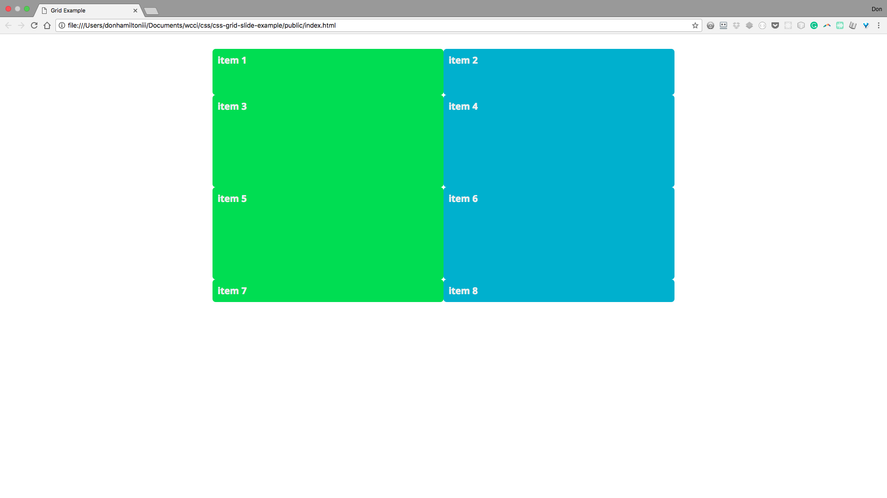
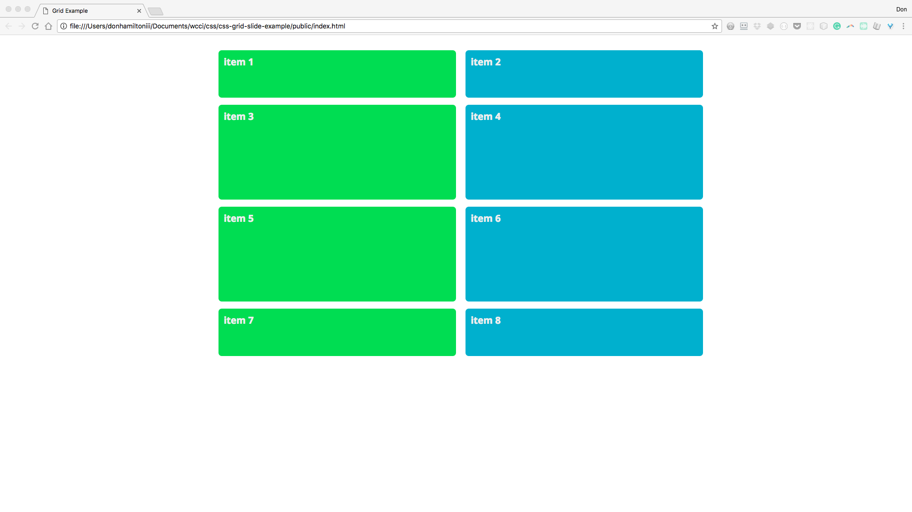
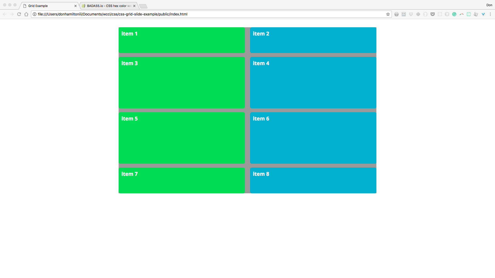
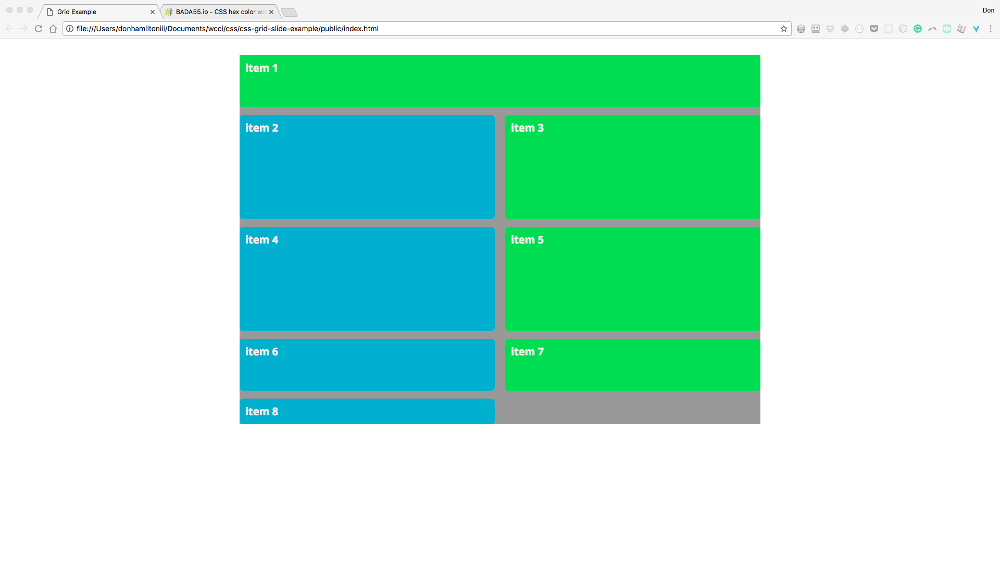
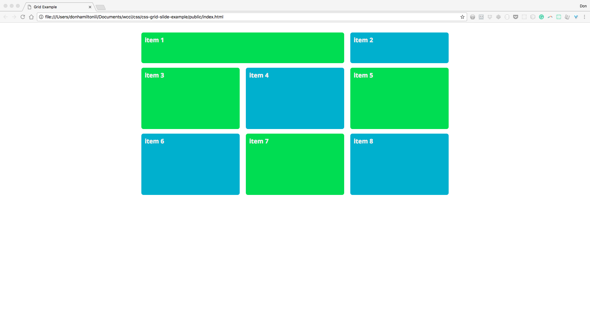

CSS Grid
Finally! Rows and columns in CSS!
© We Can Code IT, LLC
CSS Layouts
CSS Layouts before Grid and Flexbox were, in all honesty, a nightmare. That’s because until recently, CSS wasn’t really equipped to handle content layout.
We had to use all manners of tricks, overrides, or just flat-out violation of separation of concerns to get our web pages laid out properly. This included having to include <div> tags in our code that were unnecessary and using percentage based measurements to make columns. (Queue mad scientist laughter)
No longer my friends!
CSS Grid vs. Flexbox
So there are two new layout tools available to us is CSS. We use CSS Grid for two-dimensional page design. Flexbox is used for one-dimensional placement of objects inside of individual containers.
We are going to go through Grid now.
Grid
The first thing you need to start using grid is a grid container. We accomplish that with display: grid; on the containing element:
<!-- index.html -->
<!DOCTYPE html>
<html>
<head>
<meta charset="utf-8">
<title>Grid Example</title>
<link rel="stylesheet" href="../css/style.css">
</head>
<body>
<div class="container">
<!-- All of your code goes here -->
</div>
</body>
</html>
/*style.css*/
.container {
display: grid;
}
Grid Items
Grid items are any children of your grid container.
<div class="container">
<section class="grid-item grid-item-1">1</section>
<section class="grid-item grid-item-2">2</section>
<section class="grid-item grid-item-3">3</section>
<section class="grid-item grid-item-4">4</section>
<section class="grid-item grid-item-5">5</section>
</div>
This gives you a result that looks like this:

Container
One of the first things to notice that needs to be handled is the way our content goes from one edge of the page to the other. There aren’t a lot of websites out there that use a layout like this. So here is a common container setting that will limit the size of your content and make it look a little neater:
.container {
display: grid;
margin: 2rem auto 2rem auto;
width: 1000px;
}
Let’s step through what’s happening here.

This line of code is saying that we want our container to have a width of 1000px. Since our viewport is larger than 1000px, our container will be slimmer and have some space between itself and the edges of the window.
.container {
display: grid;
margin: 2rem auto 2rem auto;
width: 1000px;
}
This line of code is saying that we want to have 2rem units of space on the top and bottom of our container. The auto keyword is telling our browser to take what ever space is left on the sides and distribute it evenly effectively centering our container.
.container {
display: grid;
margin: 2rem auto 2rem auto;
width: 1000px;
}
Notice the repetition? There is a short hand when both top/bottom AND right/left share the same values. This code can be re written as follows: 2rem auto. It will be written this way in following slides. Ok, back to actual grid syntax.
Grid Columns
So as you can see, grid layout on its own does nothing for your content. This is because by default your grid is set to have only one column and one row. So this essentially leaves your content looking like it’s still displayed as block level elements. Let’s add another column:
.container {
display: grid;
grid-template-columns: 500px 500px;
margin: 2rem auto;
width: 1000px;
}
Now we have two columns set to 500px each effectively making a 2 column grid. The more values you put into grid-template-columns, the more columns you will create.

We can now add items to our grid and they will fall in place the same way! (Just add 3 more items that look the same as the first 5 with updated numbers. Don’t forget classes!)

Grid Rows
Great! Now we can make columns, and we can make as many as we want! Now what about rows? Well rows don’t work very differently. Let’s make 4 rows and make them grow, and then shrink in size, like this:
.container {
display: grid;
grid-template-columns: 500px 500px;
grid-template-rows: 100px 200px 200px 100px;
margin: 2rem auto;
width: 1000px;
}
This gives us a grid that now should look something like this:

Same as columns, you will have as many rows as you declare. So, if you remove the last value, the row will take up only as much space as the content requires.
.container {
display: grid;
grid-template-columns: 500px 500px;
grid-template-rows: 100px 200px 200px;
margin: 2rem auto;
width: 1000px;
}
This gives you:
Three rows with declared heights and one that will auto-size based on content.

But let’s put that back.
Gutters
So, last big concern with how our grid is looking. Spacebetweenthegridcells. See what I mean? Our content sort of runs together the way it is currently. So, let’s look into putting some separation between all that content.
We have grid-column-gap and grid-row-gap but, as I’m sure you might guess by now, there is a way to combine the two and that’s what we’re going to use.
.container {
display: grid;
/*The first value handles row gap, the second col gap*/
grid-gap: 15px 20px;
grid-template-columns: 500px 500px;
grid-template-rows: 100px 200px 200px 100px;
margin: 2rem auto;
width: 1000px;
}
Notice that we now have some comfortable space between all of our grid cells.

Uh oh. Now we have our right column overflowing out of our container! There must be some way to prevent such a catastrophe. I guess we’ll just have to find out after…
Practice!
Time to take a little while to put what you just learned into practice.
Navigate to the practice exercise in your browser and follow the instructions to get started.
Flexible Grids
fr Unit
So we last left off with a grid that looks pretty good. We had nice organized content in two columns with four sized rows, nicely centered in our page. Then, we added gutters which fixed the problem of condensed content but created a whole new problem, OVERFLOWING COLUMNS!
This is no good. This is no good at all. So it looks like we need something like a dynamic column measurement. Some way to say we want two columns that should be equal and not be affected by the size of our gutters.
If the title didn’t give it away, it’s the fr (fraction) unit. This unit does exactly that. Let’s see it in action.
fr is used the same way we were using our px measurements in our earlier example. So, let’s change the code to use this new unit instead.
.container {
display: grid;
grid-gap: 15px 20px;
grid-template-columns: 1fr 1fr;
grid-template-rows: 100px 200px 200px 100px;
margin: 2rem auto;
width: 1000px;
}
You’ll notice that we now have a grid that looks very much like what we were going for the first time. The columns obviously aren’t exactly 500px wide but that’s ok.

I’m not a fan of that repetition though. Let’s take care of that with…
repeat()
Oh CSS functions, how I love thee. The repeat function takes two arguments, first, the number of columns (or rows) you want, and what value you want them to have. Let’s change our code in TWO places to use this new function.
.container {
display: grid;
grid-gap: 15px 20px;
grid-template-columns: repeat(2, 1fr);
grid-template-rows: 100px repeat(2, 200px) 100px;
margin: 2rem auto;
width: 1000px;
}
Notice that you are able to use this function inline with other size declarations no problem.

Yea. I did.
Other Noteable Values
You can use ANY measurement unit you have at your disposal as column/row values. Some to be especially aware of are:
| Unit | Function |
|---|---|
% |
Percentage units will take up whatever percentage you declare of the containing element |
em/rem |
em/rem will do the same as you’re used to. Fixed but much more flexible than px |
auto |
This unit is a big one. Auto will take up any remaining space in a fixed container. if the container isn’t fixed, it will push elements to the edge of the viewport and take up all space in between. |
Container revisited
So our columns are behaving flexibly now but our container still has a fixed width. I’m not ok with that and you shouldn’t be either. Let’s make some changes to make it a little less rigid.
.container {
display: grid;
grid-gap: 15px 20px;
grid-template-columns: repeat(2, 1fr);
grid-template-rows: 100px repeat(2, 200px) 100px;
margin: 2rem auto;
max-width: 1000px;
width: 90%;
}
Again, let’s dive a little deeper:
So, what used to be width is now max-width.
.container {
display: grid;
grid-gap: 15px 20px;
grid-template-columns: repeat(2, 1fr);
grid-template-rows: 100px repeat(2, 200px) 100px;
margin: 2rem auto;
max-width: 1000px;
width: 90%;
}
This style rule is saying the container can be any width in pixels up to 1000px. Once it hits 1000px, it stops.
And now our width is set to 90%
.container {
display: grid;
grid-gap: 15px 20px;
grid-template-columns: repeat(2, 1fr);
grid-template-rows: 100px repeat(2, 200px) 100px;
margin: 2rem auto;
max-width: 1000px;
width: 90%;
}
Since max-width is a flexible rule width takes precedence until the condition for max-width is met. So when our viewport is slimmer than 1000px, the width of our container is 90%.
Spanning Columns and Rows
So now you have this great grid set up and all of your content is looking GREAT (without using a framework). But maybe you want one of your elements to take up a whole row or maybe two cells in a column or maybe both! Ahhh! Grid has lost its efficiency!
We can use the commands on individual items to achieve this functionality. For example, if we wanted to have the first item span both columns in our grid:
.grid-item-1 {
grid-column-start: 1;
grid-column-end: 3; /* What? Why 3? There's only 2 columns.
Don't worry, we'll get there*/
}
Which will give us the following result:

But let’s get back to that three
Grid lines
grid-column-start and grid-column-end are referring to what are known as grid lines.
There are both four column and four row lines in the grids above. The left image shows the third column line while the right image shows the third row line. This is what we’re referencing when in grid-column-start and grid-column-end
What if, for some reason, you didn’t know how many columns you have? How would you reference the last grid line?
Well grid is pretty resourceful that way. You can use negative numbers to reference grid lines in reverse order so the last grid line is -1, the second to last is -2, third to last -3, etc.
So we can always reference the last grid line with -1. So the following does the same as our current code:
.grid-item-1 {
grid-column-start: 1;
grid-column-end: -1;
}
But, what if we just wanted our item to span two columns no matter how many columns there are? There’s a solution for that too. For that we use a shorthand that combines the two rules into one. The first parameter applies a value to grid-column-start, the second to grid-column-end
.grid-item-1 {
grid-column: 1 / span 2;
}
Let’s see the result by adding a third column.
/* inside of the .container rules */
grid-template-columns: repeat(3, 1fr);
Here’s what we get from that:

Handling content
I would suggest only explicitly sizing either your columns or your rows unless you have a very specific reason to do otherwise. Usually I would only put values on columns and let your content size the rows for you. We’ll look at how to handle your content inside of a grid cell another time. For now, it’s time for more…
Practice!
From your command line, change branches to css-grid-dynamic-practice and look at the new example image. Make yours look the same using the new techniques we’ve learned. If you finish early, check out Grid By Example for an even more in-depth look at CSS Grid. Also, If you’d like to check out the code for the grid used in this example, feel free to clone from here.